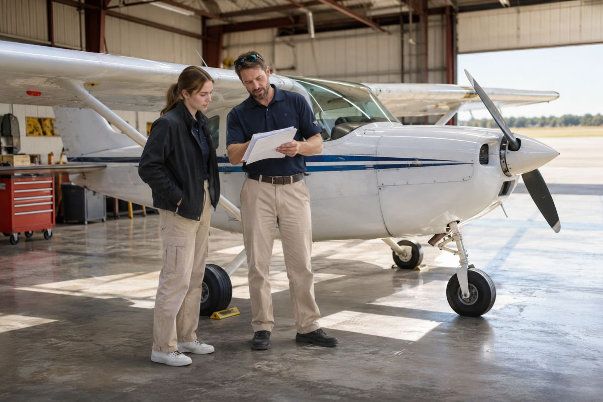

조종사 교육 / EXPLAINED
에어버스·Blue Angels Air, 인도 조종사 양성에 튀니지 교육 경로 연다
첫 교육생은 2027년 튀니지에서 훈련을 시작할 계획이다. 유럽 기준 교육 이후 인도 면허 전환 절차가 남는다.

에어버스와 인도 항공교육기관 Blue Angels Air가 인도 시장을 위한 초기 조종사 교육 협약을 체결했다고 11월 5일 발표했다. 첫 교육생은 2027년 튀니지 모나스티르에 있는 협력 비행학교 The Aviator Institute에서 훈련을 시작할 계획이다. 이번 발표는 협약과 교육 경로를 공개한 단계이며, 오늘부터 모든 지원자를 대상으로 교육이 시작됐다는 뜻은 아니다.
항공기 제작사가 초기 교육에 참여하는 이유
에어버스는 여객기 제작뿐 아니라 조종사와 항공사 운항을 위한 훈련 체계도 제공한다. Blue Angels Air는 인도에서 예비 조종사를 위한 교육을 진행하는 기관으로, 이번 협약을 통해 에어버스 비행 아카데미 네트워크의 교육과정을 활용한다. 항공사가 기체를 주문해도 이를 운항할 인력을 준비하는 데에는 별도의 시간이 든다. 따라서 기체 공급과 초기 조종사 교육은 다른 사업이지만, 항공 운송을 확대하는 과정에서는 함께 갖춰야 할 요소다. 다만 이번 협약만으로 특정 항공사의 채용 인원이 확정된 것은 아니다.
과정 명칭인 Ab Initio는 처음부터 시작한다는 의미다. 이미 대형 여객기를 운항하는 조종사가 새로운 기종으로 전환하는 교육과 구분된다. 에어버스는 유럽항공안전청(EASA) 기준 자격을 갖추도록 교육하고, 이후 인도 민간항공총국(DGCA)의 표준 면허 전환 요구사항을 거치게 된다고 설명했다. 유럽에서 교육을 마쳤다는 사실과 인도에서 실제로 면허를 인정받는 절차가 같은 것은 아니다. 지원자는 교육을 제공하는 곳, 면허 발급 체계, 돌아온 뒤의 전환 요건을 각각 살펴봐야 한다.
수요 전망은 모집 정원이 아니다
에어버스는 남아시아의 운항 중 조종사 필요 인원이 현재 약 1만500명에서 2045년 4만2000명 이상으로 늘어날 것으로 전망했다. 퇴직자 대체까지 고려하면 약 5만명의 교육이 필요하다는 계산이다. 여기서 지역은 인도 한 나라가 아니라 남아시아이며, 기간도 올해의 채용 공고가 아닌 장기 전망이다. 필요한 재직 인원과 새로 훈련해야 하는 누적 인원은 기준이 다르므로 숫자를 더해 단기 일자리 수처럼 읽으면 안 된다. 전망에는 실제 항공 수요와 항공사 성장 경로에 따른 불확실성이 남는다.
양사는 여성 조종사 진입 확대도 협력 목표로 제시했다. 그러나 이번 자료에는 첫 기수의 구체적인 모집 정원과 수업료, 장학금 규모, 전원 취업 보장 조건이 공개되지 않았다. 다양성 확대라는 방향과 개별 지원자에게 제공되는 경제적 지원은 구분할 필요가 있다. 진로를 검토하는 사람에게는 총 교육비에 무엇이 포함되는지, 해외 체류비와 추가 비행 비용은 어떤 조건인지, 면허 전환이 지연됐을 때 누가 비용을 부담하는지가 중요한 질문이다. 공개되지 않은 항목을 이미 제공되는 혜택처럼 받아들일 근거는 없다.
이번 협약의 의미는 인도 교육생이 해외 협력 학교와 표준화된 교육과정을 연결해 이용할 수 있는 경로가 생긴다는 데 있다. 이는 발표 내용에 근거한 해석이며 수료율이나 취업 성과를 입증한 결과는 아니다. 첫 기수가 아직 시작 전이기 때문에 교육 성과를 평가할 자료도 앞으로 쌓여야 한다. 지원 결정은 2027년이라는 시작 연도만이 아니라 실제 모집 요강, 계약서, 자격 전환 안내를 확인한 뒤 내리는 것이 합리적이다.